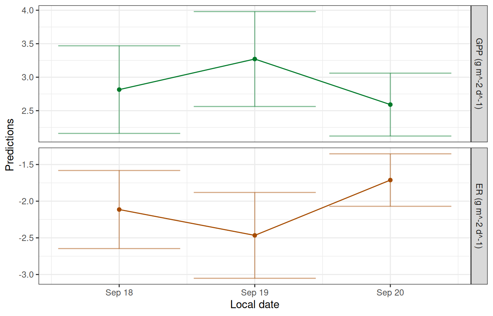
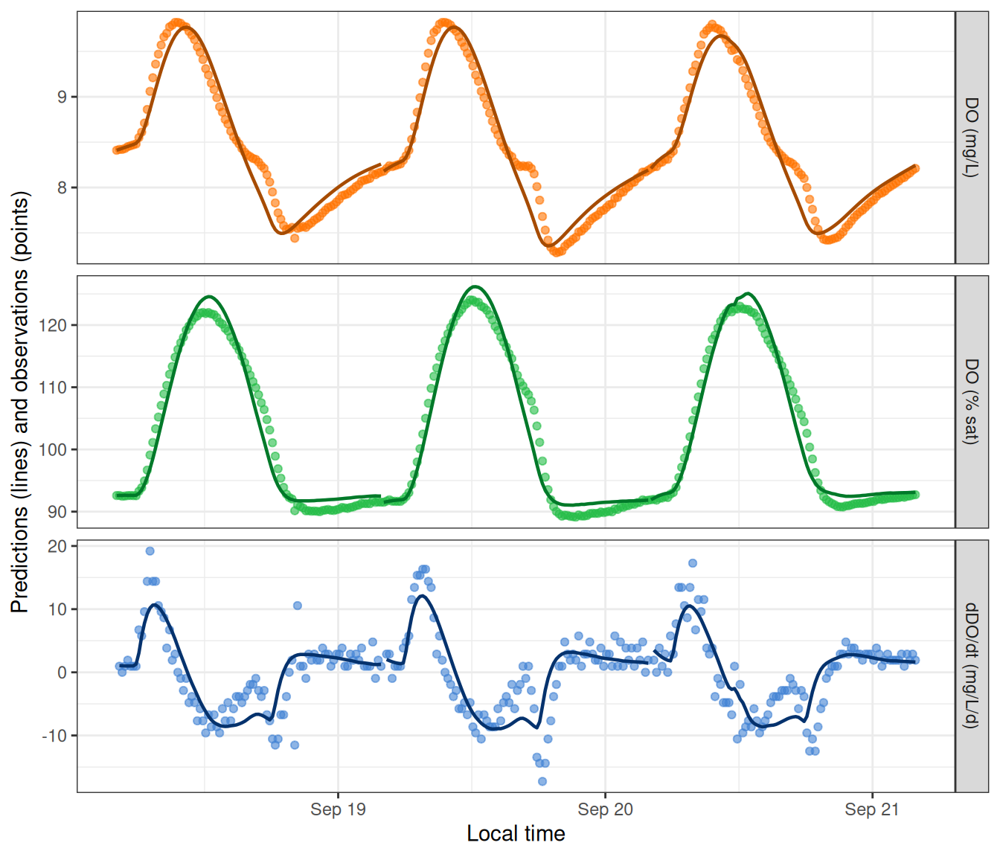

This file provides an example of fitting an MLE (maximum likelihood estimation) model, following the general outline in the Quickstart tutorial.
As a reminder, there are four steps to fitting a metabolism model in streamMetabolizer.
- Prepare and inspect the input data.
- Choose a model configuration appropriate to your data.
- Fit the model.
- Inspect the output.
Preliminaries
If you haven’t already installed the package, see the Installation tutorial.
Next load the R libraries. Only streamMetabolizer is required to run models, but we’ll also be using dplyr to inspect the results.
1. Preparing the input data
Load a small example dataset from the package (data are from French Creek in Laramie, WY, courtesy of Bob Hall). We’ll use the streamMetabolizer standard in defining our day to run from 4 am (day_start=4) to 4 am (day_end=28).
dat <- data_metab(num_days='3', res='15', day_start=4, day_end=28)2. Configuring the model
There are two steps to configuring a metabolism model in streamMetabolizer.
- Identify the name of the model structure you want using
mm_name(). - Set the specifications for the model using defaults from
specs()as a starting point.
2a. Choose a model structure
Call mm_name to choose a specific MLE model name/structure. Here we will fit the default MLE model. Many others are available (see Model Structures and GPP and ER equations), but this one is common and fast.
mle_name <- mm_name(type='mle')
mle_name[1] "m_np_oi_tr_plrckm.nlm"2b. Set the specifications
Having chosen a model, we next need to define a list of specifications for that model. The specs function creates a list appropriate to the model we chose.
mle_specs <- specs(mle_name)
mle_specsModel specifications:
model_name m_np_oi_tr_plrckm.nlm
day_start 4
day_end 28
day_tests full_day, even_timesteps, complete_data, pos_discharge, p...
required_timestep NA
init.GPP.daily 8
init.ER.daily -10
init.K600.daily 10 See ?specs for definitions of all specifications. Note that most of the specifications in that help file are omitted from the output of specs(mle_name) above - this is because MLE models are simple and don’t have many parameters to set. Any of those parameters that are included in mle_specs can be modified, either by calling specs() again or by replacing that value in the mle_specs list. Here is a command that sets the the initial values of GPP, ER, and K600 for the likelihood maximization. (I’ve done this just for illustration; the model results aren’t affected by these particular changes for this particular dataset, and you will seldom need to edit these values.)
mle_specs <- specs(mle_name, init.GPP.daily=2, init.ER.daily=-1, init.K600.daily=3)3. Fitting the model
Now actually fit the model using the metab function.
It’s optional, but sometimes helpful, to include some sort of metadata in the info, as I’ve done above. I’ve chosen to put the metadata in a character vector, but metadata can take any format you like.
4. Inspecting the model
Models show lots of relevant information if you simply print them at the command line.
mmmetab_model of type metab_mle
User-supplied metadata:
site source
"French Creek, WY" "Bob Hall"
streamMetabolizer version 0.12.1.9000
Specifications:
model_name m_np_oi_tr_plrckm.nlm
day_start 4
day_end 28
day_tests full_day, even_timesteps, complete_data, pos_discharge, p...
required_timestep NA
init.GPP.daily 2
init.ER.daily -1
init.K600.daily 3
Fitting time: 0.415 secs elapsed
Parameters (3 dates):
date GPP.daily GPP.daily.lower GPP.daily.upper ER.daily
1 2012-09-18 2.814768 2.160462 3.469074 -2.113856
2 2012-09-19 3.271369 2.562593 3.980145 -2.466321
3 2012-09-20 2.590855 2.121370 3.060339 -1.712003
ER.daily.lower ER.daily.upper K600.daily K600.daily.lower K600.daily.upper
1 -2.646427 -1.581284 31.05944 24.49084 37.62804
2 -3.051683 -1.880959 33.23987 26.63806 39.84167
3 -2.069836 -1.354171 28.71773 24.02289 33.41257
msgs.fit
1
2
3
Predictions (3 dates):
# A tibble: 3 × 9
date GPP GPP.lower GPP.upper ER ER.lower ER.upper msgs.fit
<date> <dbl> <dbl> <dbl> <dbl> <dbl> <dbl> <chr>
1 2012-09-18 2.81 2.16 3.47 -2.11 -2.65 -1.58 " "
2 2012-09-19 3.27 2.56 3.98 -2.47 -3.05 -1.88 " "
3 2012-09-20 2.59 2.12 3.06 -1.71 -2.07 -1.35 " "
# ℹ 1 more variable: msgs.pred <chr>You can also extract specific pieces of information using designated accessor functions. For example, the info and data are saved in the fitted model object and can be pulled out with get_info and get_data, respectively.
get_info(mm) site source
"French Creek, WY" "Bob Hall" # A tibble: 6 × 8
date solar.time DO.obs DO.sat depth temp.water light DO.mod
<date> <dttm> <dbl> <dbl> <dbl> <dbl> <dbl> <dbl>
1 2012-09-18 2012-09-18 04:05:58 8.41 9.08 0.16 3.6 0 8.41
2 2012-09-18 2012-09-18 04:20:58 8.42 9.09 0.16 3.56 0 8.42
3 2012-09-18 2012-09-18 04:35:58 8.42 9.11 0.16 3.51 0 8.43
4 2012-09-18 2012-09-18 04:50:58 8.43 9.11 0.16 3.48 0 8.44
5 2012-09-18 2012-09-18 05:05:58 8.45 9.13 0.16 3.42 0 8.45
6 2012-09-18 2012-09-18 05:20:58 8.46 9.14 0.16 3.38 0 8.46We can also get information about the model fitting process.
get_fitting_time(mm) # the time it took to fit the model user system elapsed
0.416 0.000 0.415
get_version(mm) # the streamMetabolizer version used to fit the model[1] "0.12.1.9000"
get_specs(mm) # the specifications we passed inModel specifications:
model_name m_np_oi_tr_plrckm.nlm
day_start 4
day_end 28
day_tests full_day, even_timesteps, complete_data, pos_discharge, p...
required_timestep NA
init.GPP.daily 2
init.ER.daily -1
init.K600.daily 3 There is a function to plot the daily metabolism estimates.
plot_metab_preds(mm)
There is also a function to plot the dissolved oxygen predictions (lines) along with the original observations (points).
plot_DO_preds(mm)
You can output the daily and instantaneous predictions to data.frames for further inspection.
predict_metab(mm)# A tibble: 3 × 10
date GPP GPP.lower GPP.upper ER ER.lower ER.upper msgs.fit warnings
<date> <dbl> <dbl> <dbl> <dbl> <dbl> <dbl> <chr> <chr>
1 2012-09-18 2.81 2.16 3.47 -2.11 -2.65 -1.58 " … ""
2 2012-09-19 3.27 2.56 3.98 -2.47 -3.05 -1.88 " … ""
3 2012-09-20 2.59 2.12 3.06 -1.71 -2.07 -1.35 " … ""
# ℹ 1 more variable: errors <chr>
head(predict_DO(mm))# A tibble: 6 × 8
date solar.time DO.obs DO.sat depth temp.water light DO.mod
<date> <dttm> <dbl> <dbl> <dbl> <dbl> <dbl> <dbl>
1 2012-09-18 2012-09-18 04:05:58 8.41 9.08 0.16 3.6 0 8.41
2 2012-09-18 2012-09-18 04:20:58 8.42 9.09 0.16 3.56 0 8.42
3 2012-09-18 2012-09-18 04:35:58 8.42 9.11 0.16 3.51 0 8.43
4 2012-09-18 2012-09-18 04:50:58 8.43 9.11 0.16 3.48 0 8.44
5 2012-09-18 2012-09-18 05:05:58 8.45 9.13 0.16 3.42 0 8.45
6 2012-09-18 2012-09-18 05:20:58 8.46 9.14 0.16 3.38 0 8.46